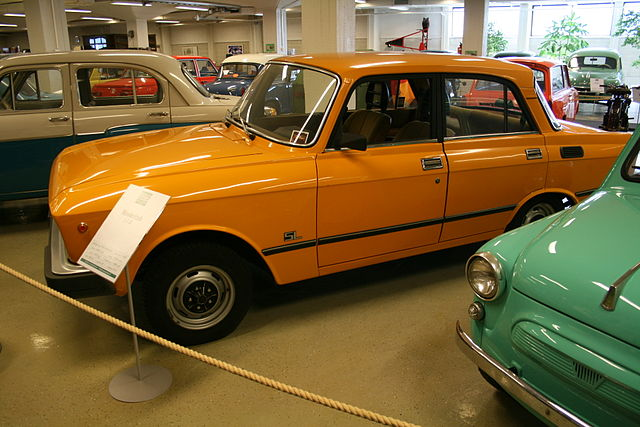
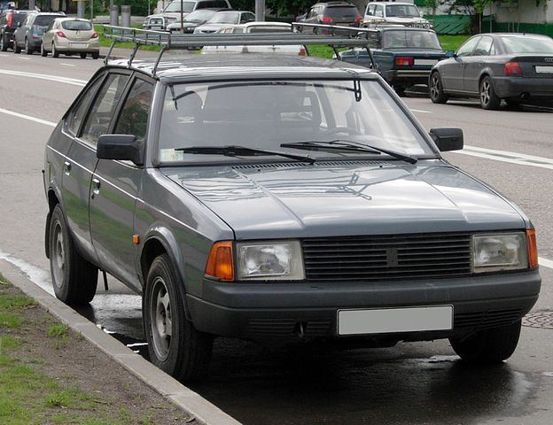

25 серпня 1980 року з конвеєра зійшов тримільйонний автомобіль «Москвич». Ним став Москвич-2140.
У 1981 році на конвеєр заводу було поставлено модель М-2140sl — покращений варіант моделі 2140.

Москвич 2140SL
У 80-і роки завод отримав кредит на закупівлю устаткування для виробництва передньоприводних моделей. У 1986 році з конвеєра підприємства зійшла принципово нова модель — Москвич-2141. Почалося будівництво власного моторобудівного заводу і розроблення нових двигунів, у т.ч. і дизелів.

Москвич 2141
17 вересня 1986 року з конвеєра зійшов чотиримільйонний автомобіль «Москвич». Ним стала модель 2140sl.
Виробництво Москвичів моделі 2140 продовжувалося до 1988 року. Потім їх повністю витіснив М-2141. Фірмова емблема підприємства введена в 80-і роки — буква «М», стилізована під зубець кремлівської стіни.